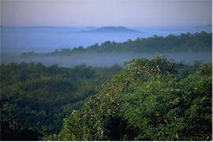

About RainforestsRainforests are forests which grow in areas of high rainfall. Tropical rainforests are found between the Tropic of Cancer and the Tropic of Capricorn and receive between 175-200 cm of rainfall a year. Why are Rainforests Important?There are many reasons why rainforests are important which can be put under the following headings: 
BiodiversityRainforests contain about half of the existing plant and animal species in the world. They contain a third of the world's bird species and 90% of its invertebrates. The remaining African rainforests contain more animals and plant species than are found anywhere else on the continent. In just one year in 2006, 19 new species of lemur were officially recorded in Madagascar. In 2.5 acres of the Amazon there could be 300 different tree species, compared to the 40 found in the whole of the UK! 2.5 acres may also contain over 750 types of trees and 1500 species of higher plants. MedicinesHundreds of rainforest plants are used in modern medicines. It is estimated that 25% of all our medicines come from plants growing in the rainforest. For example, Vincristine, a drug taken from the rosy periwinkle of Madagascar has allowed an 80% remission rate for some forms of childhood leukaemia. Curare, a poison used by Amazonian Indians on arrow tips can be used as a muscle relaxant if given in small doses. Only about 1% of the plant species have been studied, so potentially there could be many more cures to illnesses waiting to be discovered. In Madagascar, 80% of the plant species are endemic - that means they are not found any where else on earth. Yet 2/3 of their forest has already been destroyed. With 20% of all the world's plants under threat of extinction, Kew Gardens in London is taking DNA samples, in case the plants and their benefits are lost. FoodsAn estimated 80% of the world's diet originated from rainforest plants. Many food sources are still being discovered in rainforests. The 'peach palm' of Brazil produces up to 300 peach-like fruits a season. The fruit has twice the food value of banana and more protein and carbohydrate than maize. 
OxygenRainforests have been known as the "lungs of the world" due to their contribution in providing about 20% of the world's oxygen. The forests and soil also lock away carbon, an important function, especially in this age when humans are causing so much carbon dioxide to be released into the atmosphere through, for example, transport and fossil fuel power stations. In fact they absorb about 20% of the world's man-made carbon dioxide emissions. Erosion and FloodingDuring heavy downpours, the mass of vegetation in the rainforest catches and holds much of the rain, then 'disposes' of it through evaporation and transpiration; it acts like a bog umbrella breaking the force of the rain and protecting the ground surface. Where trees are cut down in large numbers, this natural protection is removed, soil erosion increases and minerals are washed away. Trees also help to control the amount of water that is held in the soil. In areas around the world where forests have been felled, the rainfall patterns have changed. In some places, the rains have almost stopped falling, and in others, flooding has been caused. PeopleIn South East Asia and the Pacific Islands, people have lived in the forests for about 40,000 years, but the earliest signs of human settlement in African forests are no more than 3,000 years old. There are about 1,000 indigenous tribes in the rainforests of the world. Rainforest tribes have managed to develop ways of life which allow them to use the forest without destroying it. Whilst other civilisations have grown further and further from the natural world, these tribes have had to grow close to nature in order to survive. European settlers have caused many of these tribes to be wiped out due to their lack of immunity to Western diseases. They now face a new threat as big logging, plantation, oil and hyrdoelectric companies try to force them off their traditional lands, often using violence. Millions of indigenous people depend on rainforests for their survival and over a billion make their livelihoods from its products. Rainforests are very rich in natural resources, but they are also very fragile. For this reason, rainforest peoples have become instinctive conservationists. For them, conservation is literally a way of life. If they were to take too much food in one year, the forest would not be able to produce enough new food for them to be able to survive in the next year. Many rainforest tribes gather their food from small garden plots, which are shifted every few years. This method is less productive than intensive agriculture, but is also much less harmful to the rainforest environment. The rainforest lifestyle may sound like a kind of paradise, a Garden of Eden for the lucky few who live there. It certainly has its advantages. There is little stress, little mental illness and little high blood pressure among rainforest dwellers. Physical fitness is generally good, and few people need to work for more than four hours a day to provide themselves and their families with adequate food and other necessities. However, life is far from perfect. One in every two children born in the rainforest dies before their second birthday, and if they make it to forty years of age they are considered tribal elders. Most rainforest dwellers who make it through childhood tend to die from a disease trivial to western medicine. It is estimated that the Amazon rainforest supported about six million tribal people before 1500AD. By 2000, there were less than 250,000 of them left. Over 90 tribes are thought to have disappeared from the Amazon alone during the 20th Century. Many were wiped out when western settlers brought diseases they had never encountered before - like measles - which wiped out thousands of tribespeople. According to Survivial, there are 150 million tribal people living in more than 60 countries. |


CopyRight © 2018-2019 |